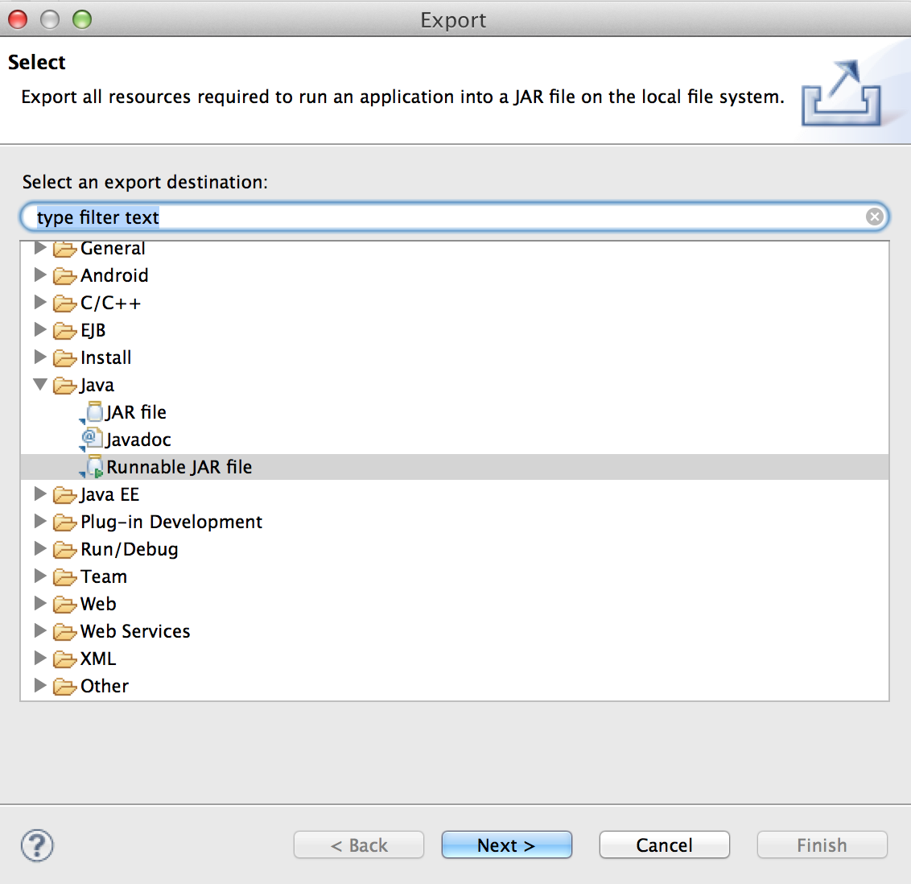
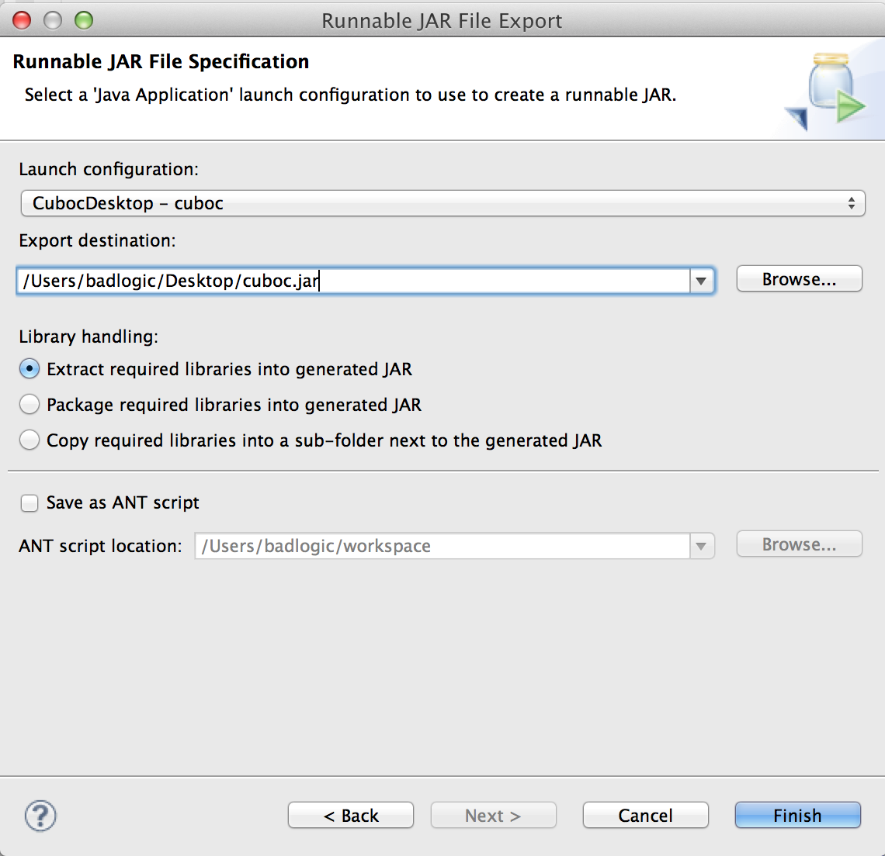

Pages 210
- Home
- 2D Animation
- 2D Particle Editor
- 2D ParticleEffects
- 3D animations and skinning
- 3D Graphics
- 3D Particle Effects
- a note from the translation
- A simple game
- Accelerometer
- Actions
- Admob in libgdx
- Airpush in Libgdx
- APK Expansions support
- Artificial Intelligence
- Asset manager
- Audio
- Back and menu key catching
- Bitmap fonts
- Box2d
- Build Infrastructure Setup
- Building libgdx from source
- Building Natives
- Building the Bullet wrapper
- Bullet physics
- Bullet Wrapper Contact callbacks
- Bullet Wrapper Custom classes
- Bullet Wrapper Debugging
- Bullet Wrapper Setup
- Bullet Wrapper Using models
- Bullet Wrapper Using the wrapper
- Bundling a JRE
- Circles, planes, rays, etc.
- Clearing the screen
- Clipping, with the use of scissorstack
- Collections
- Color Markup Language
- Community & Support
- Compass
- Configuration & querying
- Configuration & Querying
- Configuration & Querying
- Continuous & non continuous rendering
- Continuous & Non Continuous Rendering
- Contributing
- Controllers
- Coordinate systems
- Creating a Separate Assets Project in Eclipse
- Creating and texturing 3d models in blender for libgdx
- Cursor visibility & catching
- Cursor Visibility & Catching
- Decals
- Dependency management with Gradle
- Deploying as an Applet
- Deploying your application
- Distance field fonts
- Event handling
- Excelsior JET and libGDX
- Extending the simple game
- External tutorials
- File handling
- File module
- Frame buffer objects
- Games built with libgdx
- Gdx audio
- gdx dialogs
- gdx facebook
- Gdx freetype
- gdx kiwi
- gdx lml
- gdx pay
- Gesture detection
- Getting Help
- Getting ready for #libGDXJAM
- Goals & Features
- Google Mobile Ads in Libgdx (replaces deprecated AdMob)
- Google Play Games Services in LibGDX
- Google Summer of Code 2014
- Gradle and Eclipse
- Gradle and Intellij IDEA
- Gradle and NetBeans
- Gradle on the Commandline
- Graphics
- Graphics module
- GWT notes
- Gwt super dev mode
- Gyroscope
- Hello world
- Hiero
- ImGui
- Importing Blender models in LibGDX
- Improving workflow with Gradle
- Input handling
- Integrating libgdx and the device camera
- Intel RealSense Integration
- Interfacing with platform specific code
- Internationalization and Localization
- Interpolation
- Introduction
- Ios notes
- Issue Tracker
- jnigen
- libgdx utils
- libgdx utils box2d
- Local LibGDX package use with GWT
- Logging
- Managing your assets
- Manual project setup
- Material and environment
- Math utilities
- Maven integration
- Memory management
- Mesh, color & texture
- Meshes
- ModelBatch
- ModelBuilder, MeshBuilder and MeshPartBuilder
- ModelCache
- Models
- Modules overview
- More Info
- Mouse, touch & keyboard
- Mouse, Touch & Keyboard
- My First Triangle (Example)
- Networking
- Nextpeer in libgdx
- Ninepatches
- On screen keyboard
- Opengl es support
- Orthographic camera
- Overlap2D
- Overlap2D survival guide for #libGDXJAM
- Packing atlases at runtime
- Packing atlases offline
- Path Editor
- Path interface and Splines
- Physics
- Pixmaps
- Playing pcm audio
- Pollfish in libgdx
- Polling
- Preferences
- Profiling
- ProGuard DexGuard and libGDX
- Project Setup Gradle
- Project setup, running & debugging
- Projection, viewport, & camera
- Querying
- Querying & configuring graphics (monitors, display modes, vsync)
- Querying & configuring graphics (monitors, display modes, vsync)
- Quick start
- Reading and writing JSON
- Reading and writing XML
- Recording pcm audio
- Reflection
- Release Process
- Rendering shapes
- Robovm notes
- Running Demos
- Running demos & tests
- Saved game serialization
- Scene2d
- Scene2d.ui
- Screen & viewport
- Setting Up Google In App Billing
- Setting up your Development Environment (Eclipse, Intellij IDEA, NetBeans)
- Shaders
- Simple Car Racing Game
- Simple text input
- Skin
- Skin Properties
- Sound effects
- Spritebatch, textureregions, and sprite
- Spritebatch, Textureregions, and Sprites
- Starter classes and configuration
- Streaming music
- Swarm in libgdx
- Table
- Table Of Contents
- Taking a Screenshot
- TextButton
- Texture Compression
- Texture packer
- Textures & textureregions
- Textures & TextureRegions
- Textures, textureregion and spritebatch
- The application framework
- The life cycle
- Third Party Extension Support
- Third Party Extensions
- Third party services
- Threading
- Tile maps
- Universal Tween Engine
- Updating LibGDX
- Using libgdx with android studio
- Using libgdx with Clojure
- Using libgdx with intellij idea
- Using libGDX with Kotlin
- Using libGDX with other JVM languages
- Using libgdx with Python
- Using libgdx with Scala
- Using textureatlases
- Using with Groovy
- Vectors, matrices, quaternions
- Vibrator
- Video tutorials
- Viewports
- VisRuntime
- VisUI
- Wiki Style Guide
- Show 195 more pages…
Table of Contents
- Wiki Style Guide
-
Developer's Guide
- The Application Framework
- A Simple Game
- File Handling
- Networking
- Preferences
- Input Handling
- Memory Management
- Audio
-
Graphics
- Querying & configuring graphics (monitors, display modes, vsync)
- Continuous & Non-Continuous Rendering
- Clearing the Screen
- Taking a Screenshot
- Profiling
- Viewports
-
OpenGL ES Support
- Configuration & Querying OpenGL ??
- Direct Access ??
- Utility Classes
- 2D Graphics
- SpriteBatch, TextureRegions, and Sprites
- 2D Animation
- Clipping, With the Use of ScissorStack
- Orthographic Camera
- Mapping Touch Coordinates ??
- NinePatches
- Bitmap Fonts
- Using TextureAtlases
- Pixmaps
- Packing Atlases Offline
- Packing Atlases at Runtime
- Texture Compression
- 2D ParticleEffects
- Tile Maps
- scene2d
- ImGui
- 3D Graphics
- Managing Your Assets
- Internationalization and Localization
- Utilities
-
Math Utilities
- Interpolation
- Vectors, Matrices, Quaternions
- Circles, Planes, Rays, etc.
- Path Interface and Splines
- Bounding Volumes ??
- Intersection & Overlap Testing ??
- Tools
- Extensions
- Artificial Intelligence
- gdx-freetype
- gdx-pay: cross-platform In-App-Purchasing API
- Physics
- Using libGDX With Other JVM Languages
- Third Party Services
- Articles
- Getting Help
- External Tutorials
- Bundling a JRE
- Deploying as an Applet
- Getting ready for #libGDXJAM
- Coordinate systems
- Updating Your libGDX Version
- Adding Extensions and 3rd Party Libraries
- Publishing Your Own Extensions Via the Setup Application
- Improving Your Gradle Workflow
- Creating Asset Project in Eclipse
Clone this wiki locally
- Forward
- Deploy to Windows/Linux/Mac
- Users Java (JRE) is not installed or out of date
- Deploy to Android
- Deploy to iOS
- Deploy to HTML/JS
Forward
The mechanism to deploy your game differs between platforms. This article aims to articulate what is necessary to deploy to each platform that Libgdx officially supports.
Note: if you are using gradle (recommended) you may prefer following the guidelines provided on this page.
Deploy to Windows/Linux/Mac OS X
The easiest way to deploy to Windows/Linux/Mac is to create a runnable JAR in Eclipse, which includes all of your code, the code of libgdx and any extensions, and your assets. To create a runnable JAR:
- Right click your desktop project, select "Export"
- In the next dialog, select "Java -> Runnable Jar", click "Next"
 3. In the next dialog, specify the launch configuration you use to start the game on the desktop from within Eclipse, and select the output JAR file name

This will package all code and your assets into a single JAR file. To run the JAR file, a user can just double click it, provided she/he has Java (the JRE) installed and their version satisfies your target java byte code version. See below.
Users Java (JRE) is not installed or out of date
Some users may not have the right version of JRE installed and would encounter issues/be unable to even launch your game. Additionally, perhaps you want to use Java 8 features, but some of your users only have JRE 7 or JRE 6, or not at all. One may also want to "hide" the fact that it's a Java app.
In such cases, a JRE can be bundled with your application, all in one. This will enable a single file to include everything any system can use to run the game.
See: Bundling a JRE
Deploy to Android
Deploying to Android takes some extra steps. This tutorial is done using Eclipse and the Android ADT plugin.
- Right click your Android project and select "Export"
- Select "Android -> Export Android Application"
- Make sure the project you want to export is your project, select next
- Select or create your keystore. If you are new to Android development, a keystore is used to sign your applications and is required for putting your application on the market. More information is available at: http://developer.android.com/tools/publishing/app-signing.html
- Select your alias to sign with and enter the password. If you don't have an alias or want to create a new alias, select create new key and select next.
- Now select the destination of where you want your app being exported to. This will export an .apk file in the selected directory capable of being uploaded to Google Play (formerly Android Market) and alternative app stores.
- Select finish and your .apk will be built!
Notes
- The .apk file can be used to install on devices directly such as via an email attachment or download. This requires the devices to have the 'Allow Unknown Sources' option enabled in settings. Some carriers unfortunately disable this setting.
- LibGDX is only capable of officially exporting to devices running Android 2.2 or higher. If you are using LibGDX 0.9.9, you can export to Android 1.5+ Note that features supported by devices can vary, such as OpenGL ES 2 may not be supported on certain devices.
- OpenGL ES 2 requires Android 2.2 or higher and a graphics card supporting it.
- Features that are incompatible with the device such as trying to use immersive mode on a pre-kitkat device will simply not do anything on unsupported devices.
- If you want to upload to google play, here is a helpful link: http://developer.android.com/distribute/googleplay/publish/register.html
- LibGDX supports x86 Android devices starting with 0.9.9 and up. Make sure the x86 folder with libraries is in your project. Gdx-setup-ui should now generate your project with these.
Deploy to iOS
This section assumes you're familiar with the basic deployment steps for iOS apps.
Prerequisites:
- An OSX machine with Xcode installed (or the equivalent Hackintosh) and an Apple developer license account all established and paid for
- Your app is configured in
itunesconnect.apple.comwith a version number that matches yourios/robovm.propertiesfile - You have a matching distribution certificate set up at
developer.apple.comper usual
On your build machine, open Xcode, go to Preferences -> Accounts, provide your login and choose View Details.
Tap the "Recycle" button at bottom left. This will download all
necessary certificates to a place that the RoboVM Eclipse plugin expects
to find them. Click Done and exit Xcode.
Insert more here about tweaking the files: info.plist.xml, robovm.properties and robovm.xml.
Go into Eclipse, right click on your projectname-ios and choose RoboVM Tools -> Package for App-Store/Adhoc Distribution.
In the resulting dialog, pick a directory where you wish the IPA and
associated files to be placed, choose your signing identity (usually
your company, not your machine's identifier), and the provisioning
profile for this app (from developer.apple.com).
This will generate the projectname.IPA file. Now you are able to use the Application Loader
to locate your IPA and submit it to iTunesConnect. It will appear under
the Prerelease tab for your app, per usual. Then you can distribute to
your TestFlight testers etc., per the usual Apple procedure.
Deploy to HTML/JS##
Deploy to HTML/JS Eclipse method
Deploying to HTML/JS is straightforward for most cases.
- Right click your HTML project and select "Google -> GWT Compile"
- Keep the default settings and click compile
- A window will appear asking you to select the WAR directory. It is in your HTML project's folder.
- GWT will proceed to cross-compile your code into javascript. It will take awhile, but you can view the progress by pulling up the console in Eclipse.
Once the compile is complete everything you need to run your game on the web will be inside the WAR directory. Unless you are using RPC calls or other server side operations in your game, there are only a few things left to do.
- Copy the "index.html" file, your assets folder, and the folder ending in "mygdxgame.GWTDefinition" to a directory on your web server
- Navigate to the URL and you should see a loading screen for your game
Notes:
- If you are using server-side operations in your code, you will need to install Tomcat or similar software on your web server and place the full contents of your project's WAR directory in the "webapp" directory. More details here.
Deploy to HTML/JS Other IDEs / Gradle method
In your project root, run the command ./gradlew html:dist (Unix) or gradlew.bat html:dist (Windows) to build.
The result will be placed in the html/build/dist folder. You can symlink your webroot to this directory, or just copy/paste all the files into your webroot instead.
When running the result, you might encounter errors like Couldn't find Type for class .... To fix this, please see our wiki page Reflection and include the needed classes/packages.
Make sure you only add classes/packages you really need, because the more packages you include, the slower the build process gets.
See more at Gradle on the Commandline